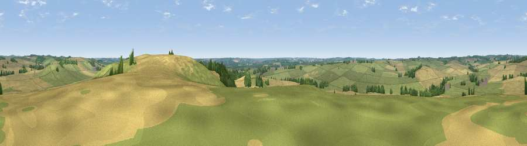

Viewpoint near Stonton Wyville
#28070 in England · top 31% of its area beats it · near Stonton Wyville · path 105 mWhere it is
The exact computed spot (SP 74175 94275). Click the marker for map links.
Public access: the nearest public right of way is about 105 m away — the final stretch may cross private land. Computed from Natural England's CRoW access layer and OpenStreetMap rights of way — not the legal definitive map. Always verify locally.
The view, rendered

A 360° render of this exact spot computed from the terrain model, tree cover and land cover — summer colours, afternoon light, calibrated against photographs of famous viewpoints. Real trees, hedges and buildings will differ in detail.
The panorama
Grey silhouette: terrain skyline in each direction (720 bearings, Earth curvature and refraction included). Dashed green: skyline with trees (+15 m) and buildings (+8 m) as obstacles. Blue strip: how far the ground is visible on each bearing.
Where the view opens
Wedge length = distance to the farthest visible ground on that bearing (vegetation-aware). Rings at 10, 25 and 50 km.
What fills the view
49% grassland · 44% cropland · 6% woodland ·
Angular shares of the visible panorama (visual magnitude), not map area. Landscape diversity 0.39 (0–1 Shannon).
Key numbers
More beautiful places nearby
The staircase of upgrades: each row has a higher view potential than everything closer. Driving times are estimates from straight-line distance, calibrated against real road routing — check an actual route before setting out.
| Place | Direction | Drive | Score |
|---|---|---|---|
| Langton Caudle | E · 0 km | ~1 min | 47.1 |
| Viewpoint near East Norton | NE · 7 km | ~14 min | 49.6 |
| Robin-a-Tiptoe Hill | NNE · 10 km | ~20 min | 54.1 |
| Viewpoint near Billesdon | NNW · 11 km | ~20 min | 56.8 |
| Viewpoint near Cold Newton | NNW · 11 km | ~21 min | 57.3 |
| Viewpoint near Burrough on the Hill | N · 18 km | ~31 min | 66.0 |
| Old John | NW · 27 km | ~44 min | 70.3 |
| Broombriggs Hill | NW · 30 km | ~47 min | 74.4 |
52.54129, -0.90773 · source: screening · position refined by local search. Computed location — check access rights before visiting.